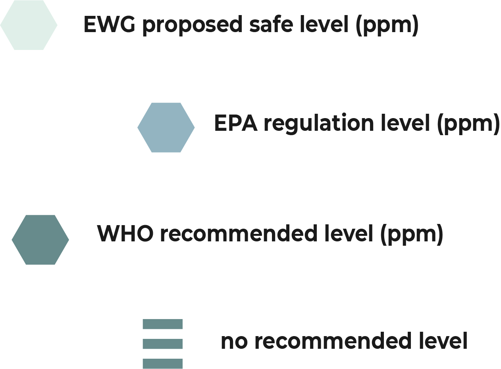

In the US, the EPA regulates all public drinking water (tap water).
The EPA, EWG, and WHO all have different standards when it comes to the level of contaminants deemed acceptable in drinking water.
Here's a quick look at just a handful of the contaminants found in drinking water across the country.
PFOS
Per- and Poly-fluorinated substances are used to create products that resist heat, oil, stains, grease and water. They are also used in some fire-fighting products.
Where it comes from:
- industrial by-product, or by unintended spills
What it does:
- may effect the endocrine and immune systems
- may increase risk of some cancers
29
states above health guideline levels
7,700,000
individuals affected
Arsenic
Arsenic is an element that occurs naturally in rocks and soil and is used for a variety of purposes within industry and agriculture. It is also a byproduct of copper smelting, mining, and coal burning.
Where it comes from:
- naturally occurring (in rocks and soil)
- by-product of various industrial processes
What it does:
- can lead to cancer
- may cause various skin problems
50
states above health guideline levels
107,000,000
individuals affected
Nitrates
Nitrate is a compound that is formed naturally when nitrogen combines with oxygen or ozone. Nitrogen is essential for all living things, but high levels of nitrate in drinking water can be dangerous to health, especially for infants and pregnant women.
Where it comes from:
- naturally occurring
- agricultural run-off
What it does:
- causes problems with oxygen transport in the blood (methemoglobinemia)
- causes generalised health problems for infants
49
states above health guideline levels
189,000,000
individuals affected
Lead
The most common sources of lead in drinking water are lead pipes, faucets, and plumbing fixtures. Certain pipes that carry drinking water from the water source to the home may contain lead. Household plumbing fixtures, welding solder, and pipe fittings made prior to 1986 may also contain lead.
Where it comes from:
- aging water infrastructure: corrosion of lead pipes and other fixtures
What it does:
- has varied negative health outcomes, including reduced cognitive performance, problems with mood and energy levels, anaemia and problems with the nervous system
Trihalomethanes
Disinfection by-products (DBP) are a class of chemical by-products also referred to as trihalomethanes (THMs), formed when chlorine or bromine interacts with the natural organic materials found in water.
Where it comes from:
- disinfection processes in drinking water sources
What it does:
- can lead to central nervous system depression and hepatotoxicity
- may be carcinogenic
50
states above health guideline levels
287,000,000
individuals affected
Atrazine
Atrazine is a widely used chlorotriazine herbicide active against broadleaf and grassy weeds. It is applied pre- and post-emergence to agricultural land for crops such as corn and sorghum. It is also used as a non-selective herbicide.
Where it comes from:
- agricultural run-off
What it does:
- linked to a number of negative health outcomes, including cancer and reproductive issues
22
states above health guideline levels
16,000,000
individuals affected